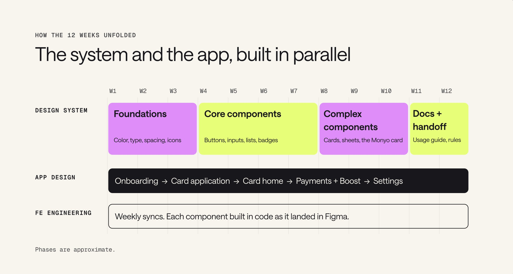
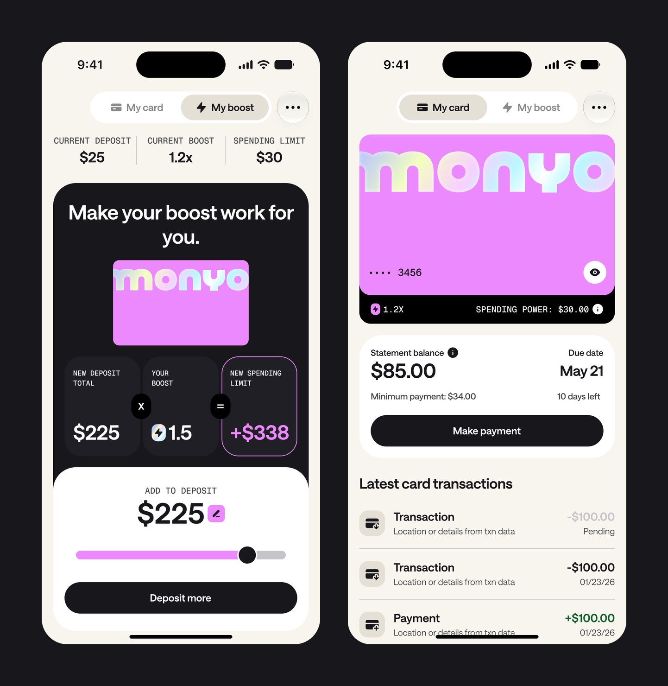
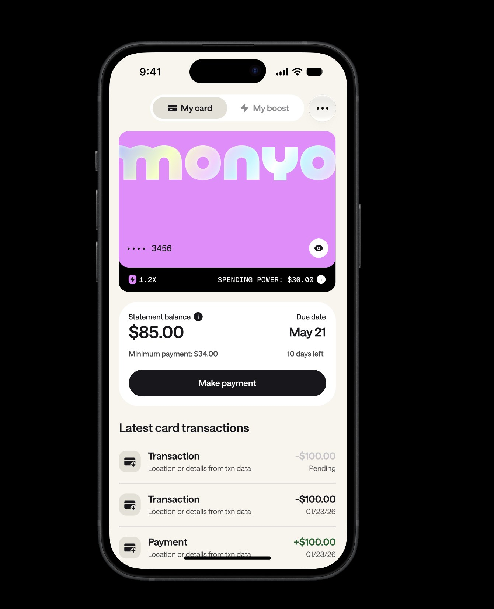
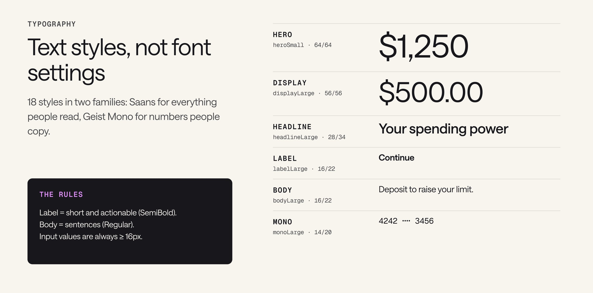
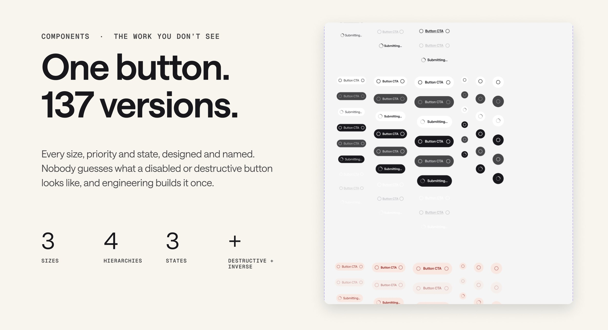
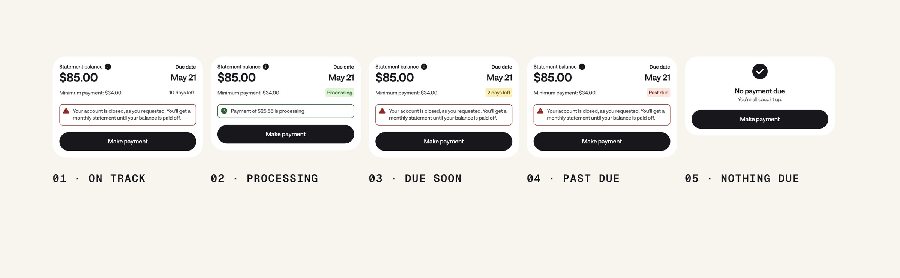
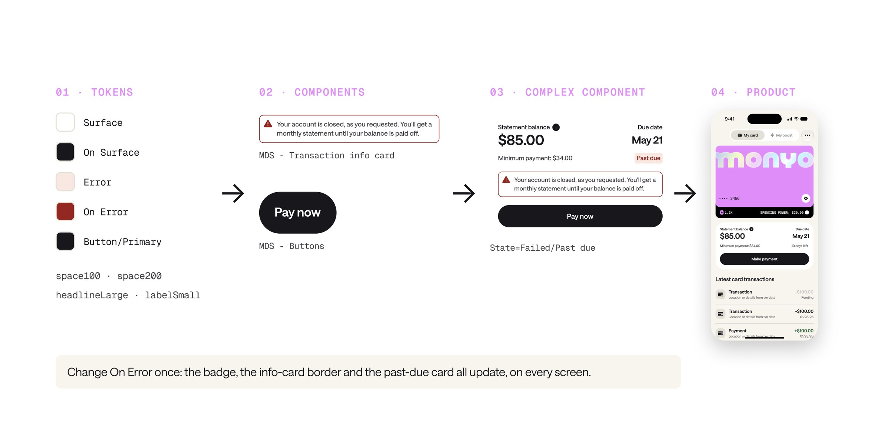
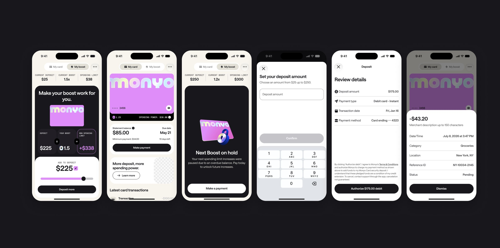

The impact
- 46
- components
- 397
- variants and states
- 169
- design tokens, each with a light and dark value
- 18
- text styles
- 1,188
- icons
- 18
- component families, all documented
Every screen in the app, from onboarding and the card application to payments, Boost, and settings, is assembled from the same 46 components. Building a system like this is usually a team's job. Here it was one designer.
Changing a tire while driving the car
There was no final brand and no final screens, and engineering was already writing code.
- Screens changing weekly. Flows were designed and redesigned in real time, so anything I built had to bend.
- Brand still landing. Colors, type, and illustration were still being decided.
- Code already being written. The front-end team needed real parts to ship with now, not a finished library later.
So I built the system and the app at the same time, with weekly engineering syncs where each component was built in code as it landed in Figma.

What I optimized for
- Flexibility: brand and product decisions can land late without redesigning a single screen.
- Growth: parts and patterns that work for the card today and new products tomorrow.
- Accessibility: readable, high-contrast, easy to tap, and ready for dark mode from day one.
Six pieces, all mine
| Piece | What it is |
|---|---|
| Foundations | Color, type, spacing, icon sizes, and touch targets |
| Tokens | 169 variables in 8 collections, each with a light and dark value |
| Components | 46 components and 397 variants, built only from tokens |
| Guidance | The usage guide, rules of thumb, and settled decisions |
| Tooling | Matching names in code, plus an MDS skill so Claude designs and reviews on-system |
| Governance | A review checklist and a known-issues backlog |
Names, not values
Screens said “Secondary,” never “this pink.” When the brand changed, I updated one value and every screen followed. That's how the system kept up with an app that was still being designed.

Color in pairs
Every fill has a partner for the text and icons on top of it: Primary with On Primary, Surface with On Surface. Readable pairs are the default, and a healthy screen stays about 80% Surface, with Primary saved for the one or two things that should pull the eye.
- AaPrimary#18171c fill, #ffffff text
- AaSecondary#ed89ff fill, #18171c text
- AaTertiary#e2ff60 fill, #18171c text
- AaSurface#ffffff fill, #18171c text
- AaSurface Elevated#f8f5ee fill, #18171c text
- AaSurface Container#e4e0d6 fill, #18171c text
- AaError#fce7e0 fill, #a01818 text
- AaSuccess#d9f6d2 fill, #135f2c text
- AaWarning#fcefb4 fill, #7a5300 text

Type and spacing
Eighteen text styles in two families: Saans for everything people read, Geist Mono for numbers people copy. Spacing runs on a 4-point scale, and corner radius comes from the same scale, so there's one set of numbers to learn.

- space504
- space1008
- space15012
- space20016
- space30024
- space40032
- space60048
- space75064
The work you don't see
One button has 137 versions: three sizes, four priorities, three states, plus destructive and inverse. Nobody guesses what a disabled or destructive button looks like, and engineering builds it once.

Real life is messy, so every component covers every situation a customer can be in. The same care goes into declines, errors, loading, and empty states across the app.

Change it once, everywhere
Tokens feed components, components feed bigger components, and those make up every screen. Change On Error once, and the badge, the info card border, and the past-due card all update everywhere.

Names match one to one across design and code, so handoff is a lookup instead of a conversation:
| Where | Name |
|---|---|
| Figma | On Error |
| Web | var(--on-error) |
| iOS | onError |
| Android | onError |
Engineering's server-driven UI is built on MDS too. The server sends meaning, never a hex value, a font, or a pixel, so a token change reaches those screens with zero server work.
Accessibility, built in
- Readable pairs: every fill comes with an On color for what sits on top.
- 44px touch targets as the minimum for anything you can tap.
- Input text never below 16px.
- Light and dark values on every token.
Because it lives in the foundations, every new screen inherits it for free.
Decisions, written down
The usage guide records settled calls so reviews don't relitigate them:
- Destructive actions: in the confirmation step, the safe choice is the primary button (“Keep bank connection”) and the destructive one is plain text.
- One holo moment per screen. The gradient is for brand and celebration, never for meaning or status.
- Money words: spending power, spending limit, and total balance each mean one thing. “Credit limit” appears only in legal copy.
The result

| For | What changed |
|---|---|
| Customers | One consistent, readable app they can trust with their money |
| Design | Screens assembled from parts, with decisions already made |
| Engineering | Handoff is a lookup, and theme changes ship as token updates |
| The business | New products start from what already exists, not a blank page |
A design system is a product, not a project. Next up: dark mode polish, publishing every component to the library, regular design-to-code checks, and patterns for products beyond the card.